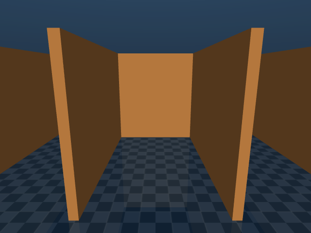
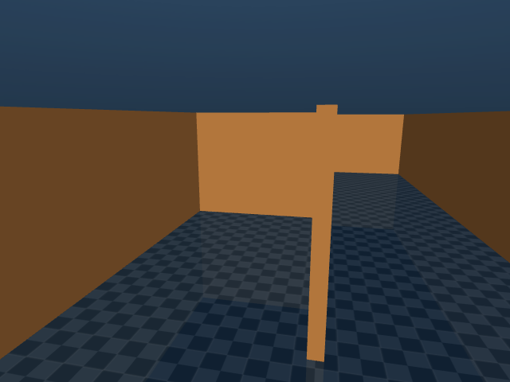
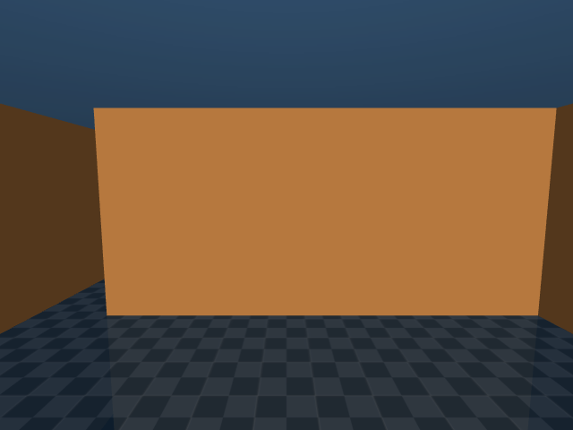

01The frozen v2 layout: one shared instrumented template
All four worlds instantiate the same 37 m corridor, divided into three 12 m stages (easy 0–12, medium 12–24, hard 24–37 m) that each instantiate one capability mechanism. A theme sets only cross-section and palette, deliberately holding layout constant so cross-world differences isolate sensing, degradation and mission semantics rather than geometry; per-trial seeds jitter barrier side, position and thickness (same seed ⇒ identical jitter across worlds).




Stage order is the composition: five orderings exist, two familiar (detour-recovery-sensing, sensing-detour-recovery) and three held out (recovery-sensing-detour, detour-sensing-recovery, recovery-detour-sensing). Ordered checkpoints (per-stage mechanism and exit targets, weights 1/2/3 by stage, plus a weight-3 goal; totals 10–12 by composition) define weighted progress. The bands carry position-dependent sensor degradation; a separate sensor-OOD condition composes frozen perturbations every sensor tick. The mechanisms abstract the navigation decisions the operational scenarios demand — detouring around a bridge support, retreating from a blocked factory aisle, assessing an occluded service passage — into reusable instrumented probes with explicit denominators.